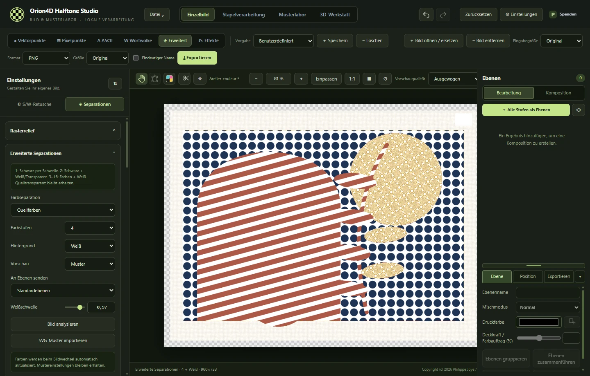

Hier finden Sie Schritte und Dateiformate für Ihr Projekt, von den Rastereinstellungen bis zum Export für Druck und 3D-Modelle.
Kein Kapitel passt zur Suche. Versuchen Sie „Druckfarbe“, „Ebene“ oder „Relief“.
Installieren oder aktualisieren
Laden Sie Orion4D-Halftone-Studio-V2-Windows-x64.zip von der Seite mit den GitHub-Veröffentlichungen herunter.
Entpacken Sie das Archiv in einen Ordner mit Schreibzugriff und starten Sie Orion4D-Halftone-Studio-Portable-2.0.0.exe. Die Anwendung ist portabel.
Lassen Sie models/ neben der ausführbaren Datei, damit Freistellung und Tiefenkarten offline funktionieren.
Wählen Sie in den Einstellungen die Sprache, eine Oberflächenskalierung von 80 % bis 130 % und den Ausgabeordner. Klicken Sie auf settings.json speichern.
Entpacken Sie ein Update in einen neuen Ordner und kopieren Sie die gewünschten Vorgaben, Schriftarten, SVGs und Einstellungen dorthin. Öffnen Sie .orion4d-Projekte über das Menü Datei.
Orion4D Halftone Studio ist kostenlos. Spenden sind freiwillig. Das Paket enthält die V2-Lizenz und die Hinweise zu Komponenten von Drittanbietern.
Wechseln Sie den Modus in der oberen Leiste. Links stehen die Einstellungen, in der Mitte die Vorschau und rechts die Ebenen.
Klicken Sie unter Einzelbild auf Bild öffnen / ersetzen und wählen Sie die Quelldatei.
Wählen Sie Vektorpunkte für als SVG exportierbare Formen oder Pixelpunkte für ein Rasterbild.
Stellen Sie Abstand und Form ein. Vergleichen Sie das Ergebnis über Vorher / Nachher mit der Quelle.
Wählen Sie oben Format und Ausgabegröße und klicken Sie auf Exportieren. Speichern Sie das Dokument, um die Einstellungen zu behalten.
Eingabe- und Ausgabegröße
Die Eingabegröße bestimmt die Arbeitsabmessungen vor der Verarbeitung. Behalten Sie die Originalgröße bei, wählen Sie 25 bis 200 % oder legen Sie die längste Seite auf einen Wert von 1.024 bis 8.192 px fest. Seitenverhältnis und Transparenz bleiben erhalten. Das Dokument behält das Originalbild.
In Arbeitsgröße exportieren
Wählen Sie Original als Ausgabegröße, um die Arbeitsabmessungen zu übernehmen. Für andere Abmessungen wählen Sie eine feste Länge für die längste Seite oder ein Druckformat. Bei einer Größenänderung ist die längste Eingabeseite auf 8.192 px begrenzt.

Einzelbild im Modus Erweitert. Die Eingabegröße steht in der oberen Leiste.
Retusche und Tiefe
Bereiten Sie mit der SW-Retusche die Töne für ein Schwarzweißraster vor. Achten Sie darauf, dass Schatten und Lichter die gewünschten Druckdetails behalten.
Die Freistellung verwendet lokale Modelle. Passen Sie Maskenschwelle und Kantenglättung an und exportieren Sie den Ausschnitt als PNG.
Erstellen oder importieren Sie unter Rasterrelief eine Tiefenkarte und aktivieren Sie das Relief. Stärke, Richtung und Glättung steuern die Verformung. Das Miniaturbild zeigt die Tiefenkarte, auch wenn die Arbeitsfläche das bearbeitete Bild anzeigt.
Erstellen Sie unter Normalenkarte Normalen aus der Tiefe oder importieren Sie eine PNG-Normalenkarte. Aktivieren Sie ihren Einfluss, um das Raster an die Oberfläche anzupassen.
Vektor- und Pixelpunkte
Vektorpunkte
Stellen Sie Gitter, Abstand und Punktform ein. Die Vektorwerkstatt bietet auch durchgehende Schraffuren, adaptive Punktierung und Bézier-Konturen. Die Analysegenauigkeit bestimmt die Geometrie. Eine höhere Exportauflösung gibt sie feiner wieder.
Legen Sie eine eigene SVG-Form in svg_dots/ neben der ausführbaren Datei ab. Wählen Sie den Stil für eigene SVGs und laden Sie die Formenliste neu.
Pixelpunkte
Stellen Sie Abtastung, Rasterverarbeitung und Mustererzeugung ein. Vergleichen Sie die Muster bei der vorgesehenen Exportgröße. PNG erhält das Rasterbild. RGB mit 1 Bit erzeugt ein Ergebnis nach Schwellenwert.
Druck und Druckfarben
Öffnen Sie Erweitert → Separationen, wählen Sie Druck und dann CMYK, Zwei-, Drei- oder Mehrfarbdruck. Für vier bis acht Farben können Sie die Zuordnung berechnen oder ein ICC-Ausgabeprofil importieren.
Die Mehrfarbpalette beginnt mit CMYK, Orange und Grün. Sonderfarbpaletten bieten gemischte, pastellige, komplementäre und tertiäre Farben.
Stellen Sie die Druckgröße ein, damit die Rasterweite zu den physischen Abmessungen passt.
Wählen Sie ein gemeinsames Muster, einen Abstand und eine Farbdeckung. Öffnen Sie eine Druckfarbe, um Muster, Kurve und Winkel anzupassen. Alle Kurven zurücksetzen stellt eine lineare Farbreaktion wieder her.
Vergleichen Sie gerasterte Muster mit den flächigen Auszügen. Übertragen Sie die Stufen in Ebenen oder exportieren Sie die Farbauszüge.
Rasterweite und Abstand
Bei gekoppelter Rasterweite aktualisiert eine Änderung das jeweils andere Feld. Der Abstand in Millimetern ist 25,4 ÷ lpi. Bei 40 lpi beträgt er 0,635 mm. Bei einem stochastischen FM-Raster stellen Sie die Größe der Mikropunkte ein.
ASCII und Wortwolken
ASCII
Wählen Sie Stil und Zeichensatz und passen Sie Spalten und Anordnung an. Verwenden Sie PNG für das gerenderte Bild, SVG für Zeichenkonturen oder TXT für regelmäßige Zeichengitter.
Wortwolke
Importieren Sie einen Text oder eine Wortliste als TXT, CSV oder JSON. Gewichten Sie die Wörter und wählen Sie eine Silhouettenmaske oder Fotoanalyse. Foto / Porträt eignet sich als Ausgangspunkt für eine dichte Komposition in den Bildfarben.
Importieren Sie eine TTF- oder OTF-Schrift über das Typografiepanel oder legen Sie sie in fonts/ ab. SVG exportiert die Zeichen als Konturen.
Ebenen und Exportformate
Ergebnis als Ebene fügt das Ergebnis dem Ebenenpanel hinzu. Wechseln Sie zu Komposition, um Druckfarben zu stapeln, zu verschieben oder umzufärben. Ein Alt-Klick auf die Sichtbarkeit isoliert eine Ebene. Ein weiterer blendet alle Ebenen wieder ein.
Format
Verwendung
PNG
Rasterbild, Komposition oder Farbebene, je nach Modus.
SVG
Pfade aus dem Vektor-, ASCII- oder Wortwolkenmodus.
PDF / PSD
Kompositionen, Übergabe an eine Druckerei oder Farbauszüge, je nach Exportoptionen.
OBJ / STL
Netze aus der 3D-Werkstatt. Die Maße sind in Millimetern angegeben.
Prüfen Sie vor dem Export einer Druckplatte die physische Größe, Pixelabmessungen und den Hintergrund. Ein .orion4d-Dokument bleibt bearbeitbar.
Die Druckprüfung hilft bei der Kontrolle von feinen Details, Weißunterlegung und Passer. Je nach Format können Sie Schwarzfilme, Negative oder gespiegelte Platten ausgeben.
Musterlabor
Erstellen Sie in der Musterlabor ein verstellbares Muster. Im Musterkatalog können Sie Muster vergleichen und anschließend auf ein Raster oder eine Druckfarbe anwenden.
Speichern Sie wiederverwendbare Einstellungen als Vorgaben oder Werkstattprofile. Die lokale Bibliothek der portablen Version liegt in patterns/ und svg_dots/.
3D-Werkstatt
Öffnen Sie die Werkstatt über die Hauptleiste. Wählen Sie einen Modus und stellen Sie Material, Beleuchtung und Ansicht ein, bevor Sie die Ausgabe wählen.
Modus
Erste Einstellungen
Druckmaterialien
Simulieren Sie Folienprägung, Lack oder Prägung. Legen Sie das Raster auf eine Kugel, einen Zylinder, gebogenes Papier oder ein Relief. Stellen Sie Licht, Schatten und Umgebungsverdeckung (SSAO) ein.
Skulpturale Raster und 3D-Wörter
Stellen Sie das Gitter oder die Wortwolke und anschließend die Höhe der Formen ein. Prüfen Sie Sockel und Ansicht vor dem Export.
Bild zu 3D-Netz
Legen Sie Breite, Reliefhöhe und Sockeldicke in Millimetern fest. Die Höhen ergeben sich aus einem Bild oder einer Tiefenkarte.
Lithophanie
Stellen Sie Mindest- und Höchstdicke, Kurve und Absorption ein. Kalibrieren Sie das Filament mit dem Stufentest für Ihre Lichtquelle.
Skulptur aus zwei Bildern
Vergleichen Sie die Ansichten A und B. Exportieren Sie eine PNG-Faltvorlage mit Schnitt- und Faltmarken und drucken Sie sie bei 100 %.
Schichtschnitt
Legen Sie Dicke und Abstand der Schichten fest und bereiten Sie die Montagevorlagen vor.
Richtungsgravur
Gravieren Sie Rillen, deren Breite und Tiefe den Bildtönen folgen. Verwenden Sie An Quellbild anpassen und streifendes Licht, um das Relief sichtbar zu machen.
3D-Anamorphose
Ordnen Sie Punkte oder Wörter im Raum an und speichern Sie die Referenzansicht mit der 3D-Vorgabe.
Exportieren Sie ein Standbild als PNG oder ein 3D-Netz als STL oder OBJ. Ein texturiertes OBJ wird mit seiner MTL-Datei und den Texturen in einem ZIP geliefert. Entpacken Sie die Dateien zusammen. Die Vorgaben liegen in presets/3d/.
Animation
Wählen Sie eine Drehung, einen optischen Effekt oder einen Aufbau- und Zerstreuungseffekt. Fügen Sie in der Zeitleiste Schlüsselbilder hinzu, verschieben oder löschen Sie sie und ändern Sie Bildausschnitt und Zoom. Exportieren Sie je nach Szeneneinstellungen als GIF oder MP4.
JS-Effekte
Wählen Sie JS-Effekte und laden Sie ein Beispiel oder fügen Sie ein Skript ein.
Klicken Sie auf Testen und anwenden. Die Live-Vorschau testet den Effekt kurz nach einer Änderung am Code oder an einem Parameter erneut.
Ergänzen Sie eine Beschreibung und klicken Sie auf Speichern, um den Code und die Parameterwerte in der Vorgabe zu sichern.
Definieren Sie Schieberegler, Zahlenfelder, Kontrollkästchen, Listen, Farben und Textfelder im JSON-Block @orion4d-params. Die synchrone Funktion erhält die Werte in params und ändert den RGBA-Puffer direkt. Die lokale Laufzeit begrenzt Zeit und Speicher.
Beispiel · einstellbarer Schwellenwert
/* @orion4d-params
[
{"key":"threshold","type":"slider","label":"Schwellenwert","min":0,"max":255,"step":1,"default":128}
]
*/
function effect(pixels, width, height, params) {
for (let i = 0; i < pixels.length; i += 4) {
const tone = 0.2126 * pixels[i] + 0.7152 * pixels[i + 1] + 0.0722 * pixels[i + 2];
const gray = tone >= params.threshold ? 255 : 0;
pixels[i] = pixels[i + 1] = pixels[i + 2] = gray;
}
}
Kopieren Sie eine kompatible JSON-Vorgabe nach presets/javascript/ neben der ausführbaren Datei und starten Sie die App neu. In einer Ebene mit einer Druckfarbe fügen dunkle Pixel Farbe hinzu. Weiß bleibt transparent.
Lokales MCP
Aktivieren Sie MCP unter Einstellungen → Lokales MCP und kopieren Sie die Konfiguration in Ihren Client. Lassen Sie Orion4D Halftone Studio und das Dokument geöffnet. Der Client verwendet --mcp-stdio und kommuniziert lokal mit der Anwendung.
orion_get_document liest Modus, Größe und bearbeitbare Einstellungen.
orion_list_presets listet Vorgaben auf. orion_apply_preset wendet eine gespeicherte Vorgabe an.
orion_set_mode wechselt den 2D-Modus. orion_update_settings stellt Verarbeitung und Druckfarben ein.
orion_test_javascript testet ein Skript mit der Quelle. orion_save_javascript_preset speichert das angewandte Skript.
orion_preview liefert eine PNG-Vorschau. orion_export_png exportiert in den in Orion4D Halftone Studio eingestellten Ordner. orion_undo macht die letzte Änderung rückgängig.
Wechseln Sie für 2D-Aktionen zur Bearbeitungsansicht und schließen Sie die 3D-Werkstatt. Kopieren Sie nach dem Verschieben der ausführbaren Datei die Konfiguration erneut.
Stapelverarbeitung und Vorgaben
Bereiten Sie ein Ergebnis mit einem repräsentativen Bild vor und speichern Sie die Einstellungen als Vorgabe. Wechseln Sie zur Stapelverarbeitung und wählen Sie Quelle, Ziel und Eingabe- und Ausgabegröße. In den Einstellungen können Sie Unterordner beibehalten und eindeutige Exportnamen verwenden.
Die Vorgaben sind in presets/ nach Modus sortiert. Nehmen Sie beim Verschieben der portablen Version die Bibliotheken und lokalen Modelle mit.
Fehlerbehebung
Freistellung oder Tiefenkarte nicht verfügbar. Prüfen Sie, ob models/ samt Unterordnern neben der ausführbaren Datei liegt.
Animationsexport dauert lange. Versuchen Sie eine kürzere Dauer, eine niedrigere Bildrate oder eine geringere Ausgabeauflösung.
Alte Programmdatei ist gesperrt. Schließen Sie Orion4D Halftone Studio und MCP-Clients, die diese Datei verwenden. Kopieren Sie vor dem Neustart die MCP-Konfiguration der neuen Version.
Geben Sie bei einer Fehlermeldung die Windows-Version, den Modus, die Eingabe- und Ausgabegröße sowie die Schritte zur Reproduktion an. Ein Problem auf GitHub melden